このコードラボでは, ゲストブックのプログラムを Go で書いて Google App Engine に公開することで, クラウドサービス上で Web アプリケーションを開発することを体験できます。
下記の流れになります。
- Go で書かれたサンプルコードを確認する。
- サンプルコードを Google App Engine に公開する。
- 公開したアプリケーションを確認する。
- サンプルコードを変更して 2. と 3. を行う。
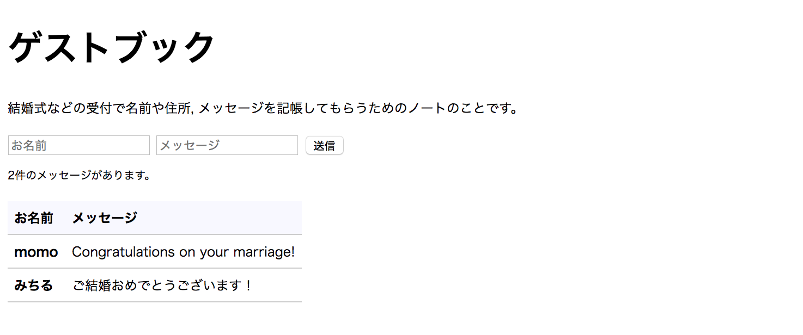
Google App Engine とは
Google App Engine は Google が Google Cloud Platform 上で提供しているインフラ上でアプリケーションを実行できるサービスです。
サーバの運用・構築の手間がかからず, ニーズに合わせて規模を拡大・縮小しやすいことが利点です。
Go の開発環境は必要でしょうか？
このコードラボでは Google Cloud Shell というクラウド上の開発環境を利用します。お使いのコンピューター上で Go の開発環境を用意する必要はありません。
Google Cloud Shell の詳しい説明と使い方は, Google Cloud Shell で Go の開発をはじめよう を参照してください。
プロジェクトにアクセスする
Google Cloud Shell で Go の開発をはじめよう の手順に従って, Google Cloud Console にアクセスしましょう。
GitHubからコードラボで利用するサンプルコードを取得しましょう。
Google Cloud Shell で Go の開発をはじめよう の手順に従って, git clone というコマンドを実行します。
$ git clone https://github.com/WomenWhoGoTokyo/codelab.gitcodelab/guestbook というディレクトリが作られていることを, Google Cloud Shell のコンソールで確認しましょう。
$ cd codelab/guestbook
$ ls
README.md app.yaml index.go init.go message.go post.go viewgit clone したファイルの中に, app.yaml があります。これは Google App Engine上で動かす アプリケーションの設定ファイルです。
Google Cloud Shell で Go の開発をはじめよう の手順に従って, Goolge Cloud Shell のエディタで codelab > guestbook > app.yaml を開いてみましょう。
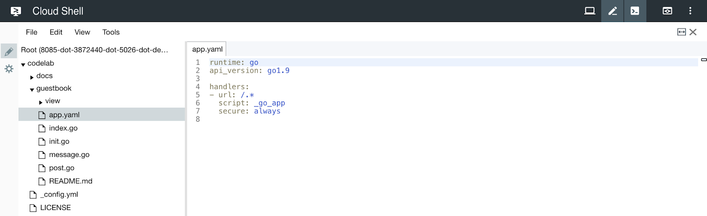
runtime: go
api_version: go1.9
handlers:
url: /*
script: _go_app
secure: always利用する開発言語やそのバージョン等を設定することができます。
このコードラボでは, 開発言語は Go , バージョンは 1.9 を設定します。
取得した Go のプログラムを Google Cloud Shell で Go の開発をはじめよう の Google App Engine に公開する の手順に従って, Google App Engine に公開してみましょう。
$ goapp deploy --application {アプリケーションID} --version {バージョン} .公開したアプリケーションを確認しましょう。
アクセスする
Google Cloud Platform の AppEngine > バージョン をクリックすると, 公開するコマンドのコマンドライン引数で利用したバージョンを一覧で確認できます。
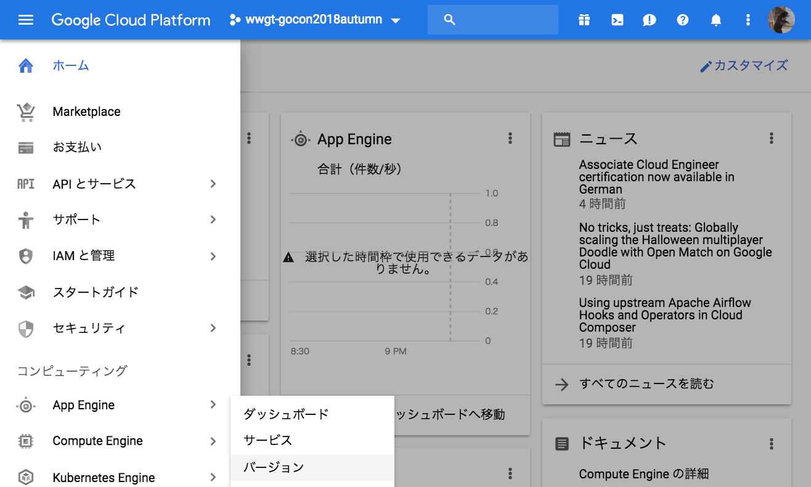
一覧で, バージョン名をクリックします。
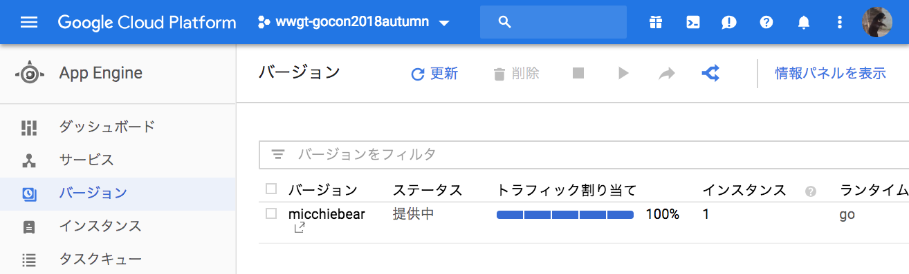
ブラウザが立ち上がり, 下記のような画面が表示されると成功です。
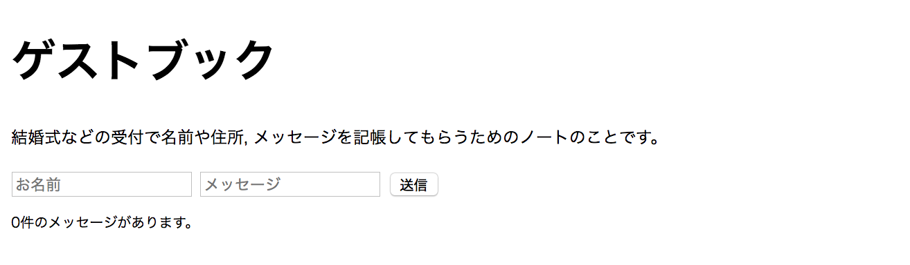
"お名前", "メッセージ" に適当な文字列を入力して, 送信ボタンを押下してみましょう。
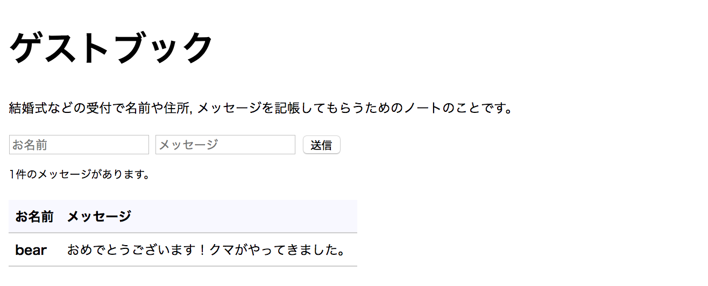
データを見る
Google Cloud Platform 上でもデータを確認することができます。
データストア > エンティティ をクリックしましょう。
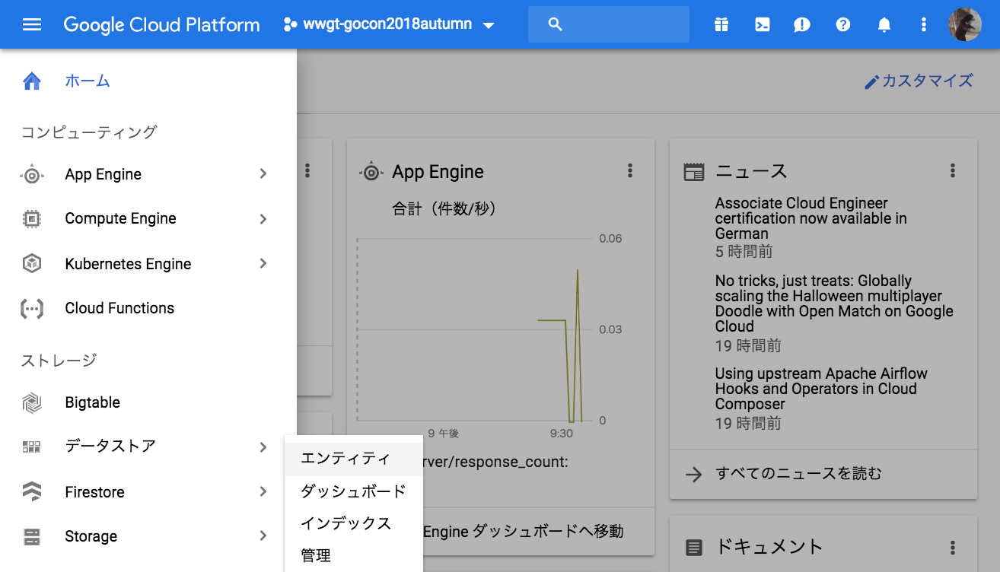
"名前空間" を選択し, 先程入力したデータが格納されていることを確認できます。
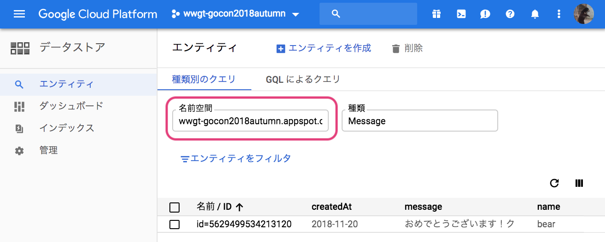

Google Cloud Shell で Go の開発をはじめよう の手順に従って, Goolge Cloud Shell のエディタを立ち上げます。
文字列が書いてあるファイルを開く
codelab > guestbook > index.go を開きましょう。
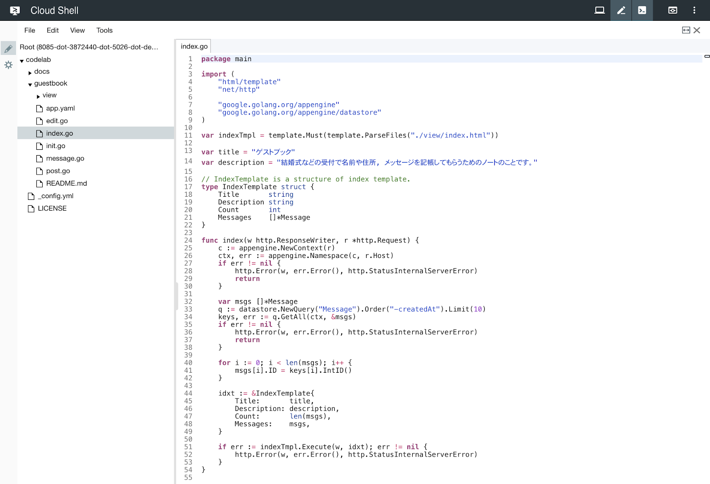
文字列を変更する
index.go の下記の部分を好きな文字列に変更します。

Before:
var title = "ゲストブック"
var description = "結婚式などの受付で名前や住所, メッセージを記帳してもらうためのノートのことです。"After (例):
var title = "Wedding Guest Book"
var description = "Gopher & Gopher 2018.11.25"File > Save を選択して, 保存します。
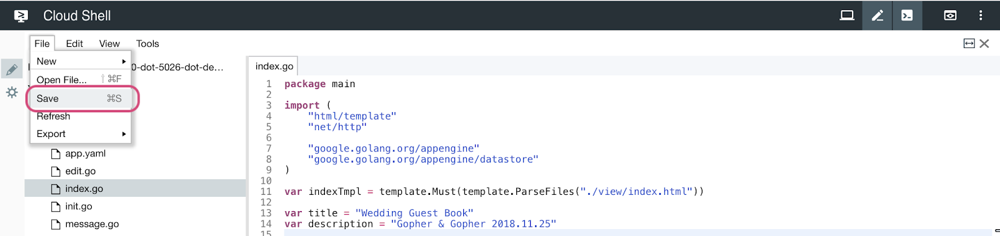
変更したプログラムを公開する
コンソールでコマンドを実行して, Go のプログラムを公開しましょう。
$ goapp deploy --application {アプリケーションID} --version {バージョン} .アプリケーションを確認する
ブラウザを更新しましょう。
タイトルとその下の文言が変更されていることを確認しましょう。

まず, "お名前" と "メッセージ" に適当な文字列を入力して, 送信ボタンを押下することを繰り返して, 10件ほど登録してみましょう。
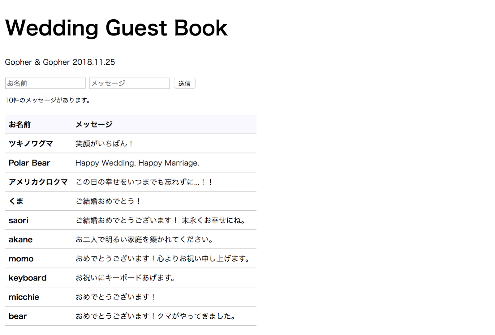
さらにもう1件の "お名前" と "メッセージ" を登録しましょう。
全部で11件の "お名前" と "メッセージ" を登録しましたが, 表示は10件で, 一番古いメッセージが表示されなくなりました。

登録した11件のの "お名前" と "メッセージ" をすべて一覧で表示できるようにしましょう。
文字列が書いてあるファイルを開く
codelab > guestbook > index.go を開きましょう。

件数を変更する
index.go の下記の部分を, 15件まで取得するように変更します。
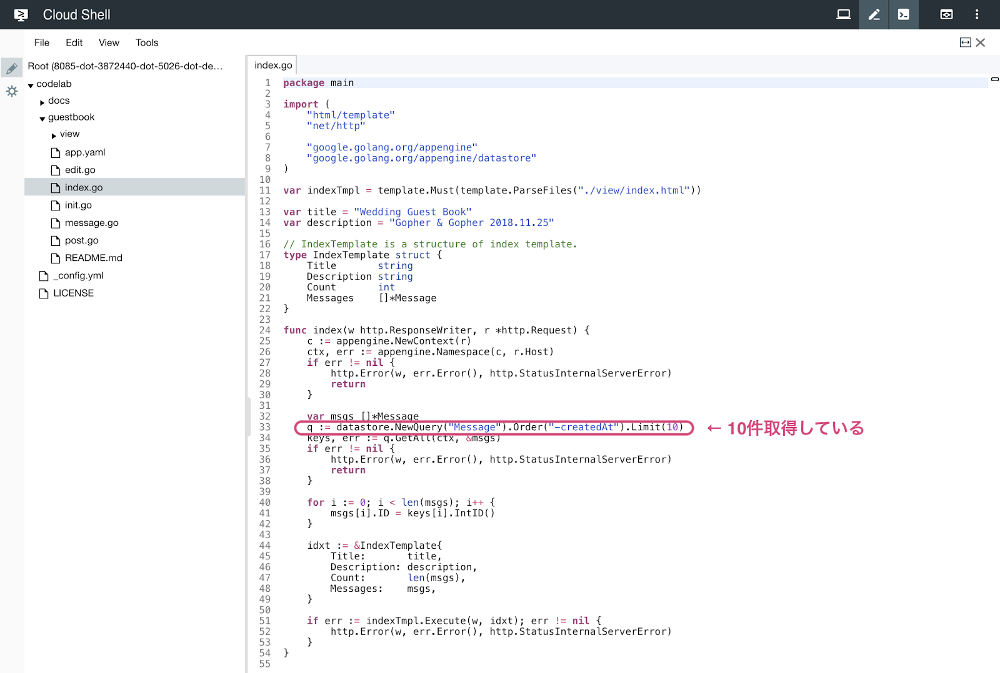
Before:
q := datastore.NewQuery("Message").Order("-createdAt").Limit(10)After:
q := datastore.NewQuery("Message").Order("-createdAt").Limit(15)File > Save を選択して, 保存します。
変更したプログラムを公開する
コンソールでコマンドを実行して, Go のプログラムを公開しましょう。
$ goapp deploy --application {アプリケーションID} --version {バージョン} .アプリケーションを確認する
ブラウザを更新ボタンを押下して, 11件の "お名前" と "メッセージ" が表示されていることを確認しましょう。

15件までは一覧に表示することができます。
"お名前" と "メッセージ" を変更できるようにします。

あらかじめ, ソースコードの一部は用意されています。
- 一覧に編集画面へのリンクを作成するためのデータの用意
- 編集画面のHTML
一覧に編集リンクを追加する
変更箇所のファイルを開く
codelab > guestbook > view > index.html を開きましょう。

一覧にリンクを足す
一覧に編集画面へのリンクを追加します。
編集画面のURLを edit , 1件の "お名前" と "メッセージ" を識別するための変数名を key とします。
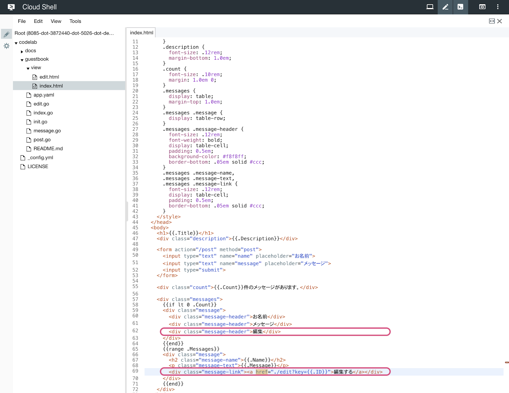
Before:
<div class="messages">
{{if lt 0 .Count}}
<div class="message">
<div class="message-header">お名前</div>
<div class="message-header">メッセージ</div>
</div>
{{end}}
{{range .Messages}}
<div class="message">
<h2 class="message-name">{{.Name}}</h2>
<p class="message-text">{{.Message}}</p>
</div>
{{end}}
</div>After:
<div class="messages">
{{if lt 0 .Count}}
<div class="message">
<div class="message-header">お名前</div>
<div class="message-header">メッセージ</div>
<div class="message-header">編集</div>
</div>
{{end}}
{{range .Messages}}
<div class="message">
<h2 class="message-name">{{.Name}}</h2>
<p class="message-text">{{.Message}}</p>
<div class="message-link"><a href="./edit?key={{.ID}}">編集する</a></div>
</div>
{{end}}
</div>File > Save を選択して, 保存します。
変更したプログラムを公開する
コンソールでコマンドを実行して, Go のプログラムを公開しましょう。
$ goapp deploy --application {アプリケーションID} --version {バージョン} .アプリケーションを確認する
まだリンク先のページはありませんが, 一覧にリンクが追加されました。
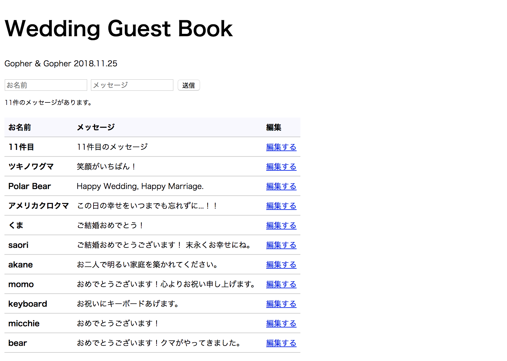
編集リンクをクリックしたら編集画面に遷移する
ファイルを新規作成する
codelab > guestbook > edit.go を新規作成しましょう。
File > New > File をクリックします。

edit.go と入力します。
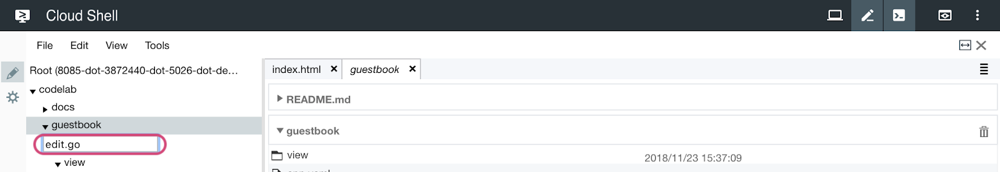
編集画面のコードを書く
下記のように書きましょう。

package main
import (
"html/template"
"net/http"
"strconv"
"google.golang.org/appengine"
"google.golang.org/appengine/datastore"
)
var editTmpl = template.Must(template.ParseFiles("./view/edit.html"))
// EditTemplate is a structure of edit template.
type EditTemplate struct {
Title string
Name string
Message string
ID int64
}
func edit(w http.ResponseWriter, r *http.Request) {
c := appengine.NewContext(r)
ctx, err := appengine.Namespace(c, r.Host)
if err != nil {
http.Error(w, err.Error(), http.StatusInternalServerError)
return
}
k := r.FormValue("key")
keyID, err := strconv.ParseInt(k, 10, 64)
if err != nil {
http.Error(w, err.Error(), http.StatusBadRequest)
return
}
var msg Message
key := datastore.NewKey(ctx, "Message", "", keyID, nil)
if err = datastore.Get(ctx, key, &msg); err != nil {
http.Error(w, err.Error(), http.StatusInternalServerError)
return
}
edt := &EditTemplate{
Title: title,
Name: msg.Name,
Message: msg.Message,
ID: keyID,
}
if err := editTmpl.Execute(w, edt); err != nil {
http.Error(w, err.Error(), http.StatusInternalServerError)
}
}File > Save を選択して, 保存します。
変更箇所のファイルを開く
/edit にアクセスすると画面が表示されるようにします。
codelab > guestbook > init.go を開きましょう。

/edit にアクセスすると, edit.go の func edit(...) が呼ばれるようにします。
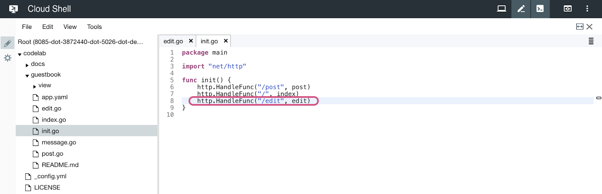
下記を追記しましょう。
http.HandleFunc("/edit", edit)File > Save を選択して, 保存します。
変更したプログラムを公開する
コンソールでコマンドを実行して, Go のプログラムを公開しましょう。
$ goapp deploy --application {アプリケーションID} --version {バージョン} .アプリケーションを確認する
一覧から編集リンクをクリックすると...
編集画面に遷移します。
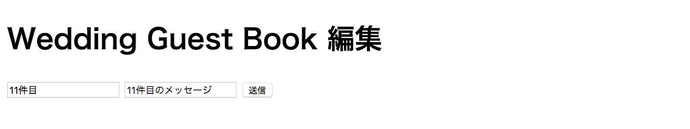
編集画面で送信ボタンを押下すると変更を更新する
変更箇所のファイルを開く
codelab > guestbook > post.go を開きましょう。
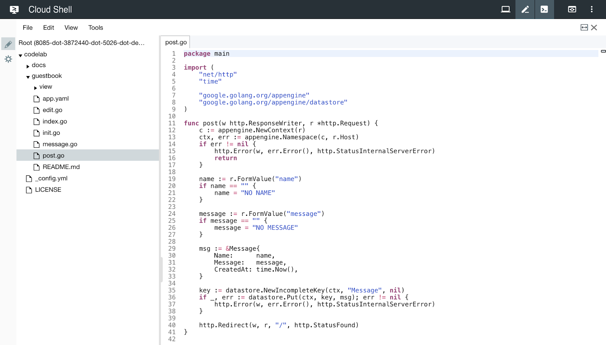
更新をできるようにする
"お名前" と "メッセージ" を識別するための変数である key があるときは更新を, ないときには新規追加をするように処理を変更します。
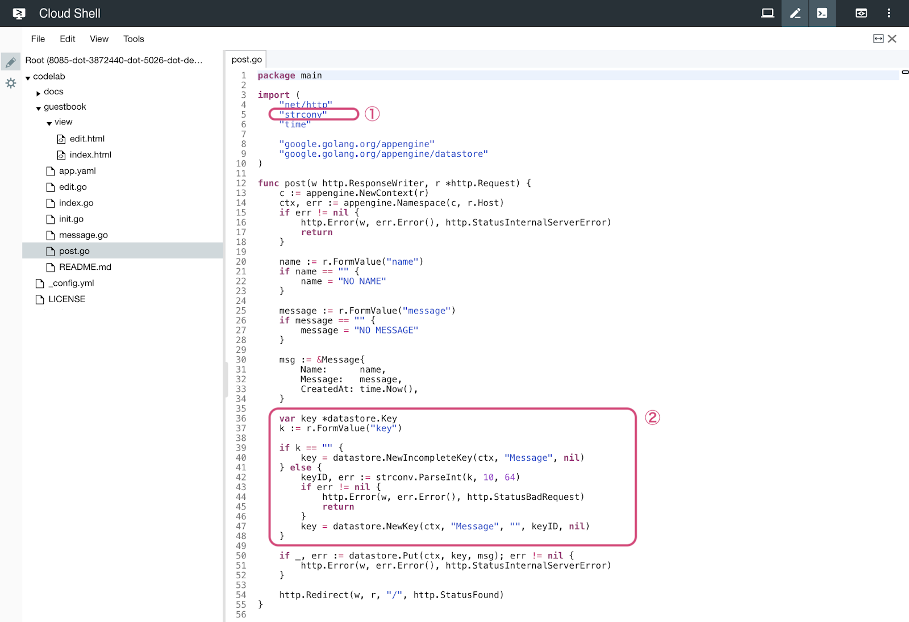
① Before:
import (
"net/http"
"time"
"google.golang.org/appengine"
"google.golang.org/appengine/datastore"
)① After:
import (
"net/http"
"strconv"
"time"
"google.golang.org/appengine"
"google.golang.org/appengine/datastore"
)② Before:
key := datastore.NewIncompleteKey(ctx, "Message", nil)② After:
var key *datastore.Key
k := r.FormValue("key")
if k == "" {
key = datastore.NewIncompleteKey(ctx, "Message", nil)
} else {
keyID, err := strconv.ParseInt(k, 10, 64)
if err != nil {
http.Error(w, err.Error(), http.StatusBadRequest)
return
}
key = datastore.NewKey(ctx, "Message", "", keyID, nil)
}File > Save を選択して, 保存します。
変更したプログラムを公開する
コンソールでコマンドを実行して, Go のプログラムを公開しましょう。
$ goapp deploy --application {アプリケーションID} --version {バージョン} .アプリケーションを確認する
編集画面でフォームの中身を変更すると...

変更された内容が一覧に反映されます。

このコードラボでは, ゲストブックのプログラムを Go で書いて Google App Engine に公開することで, クラウドサービス上で Web アプリケーションを開発することを体験しました。
ここで触れたことをきっかけに, Google App Engine と Go を利用したものづくりをもっともっと楽しんでいただけますように！と願っています。